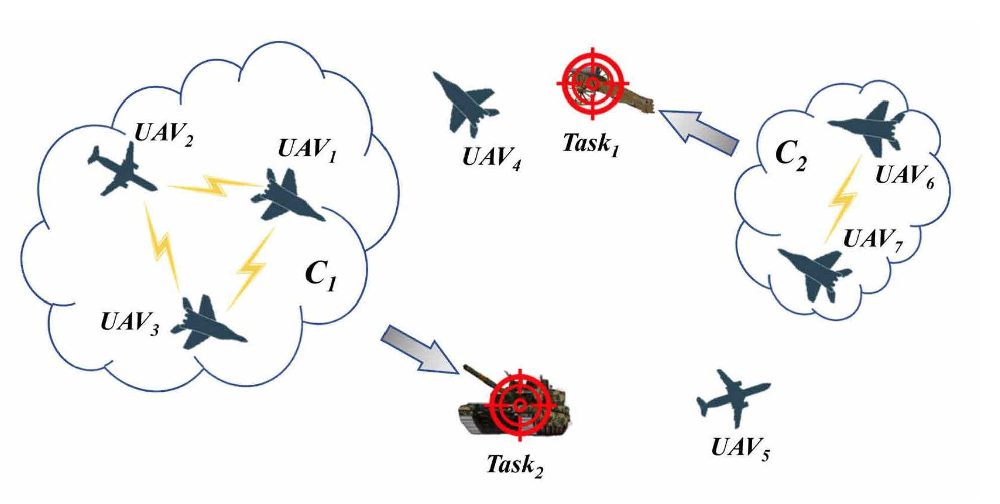
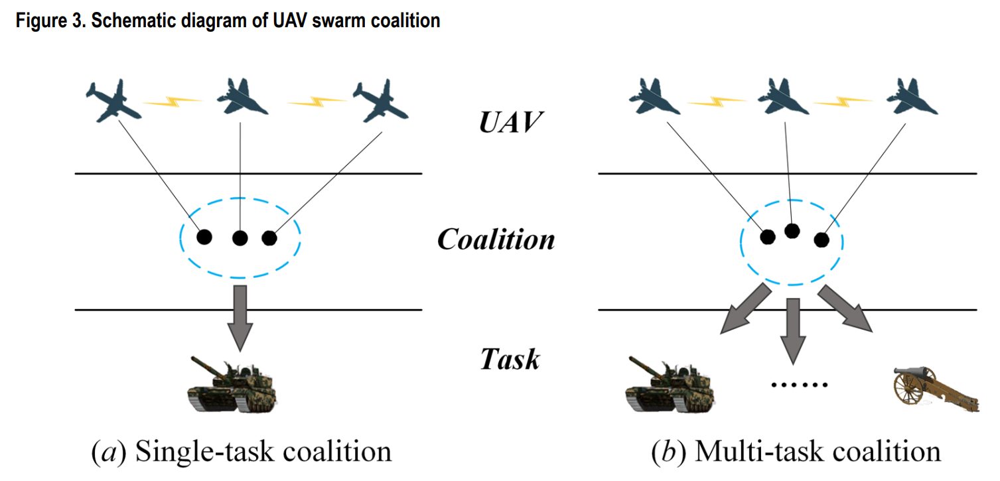
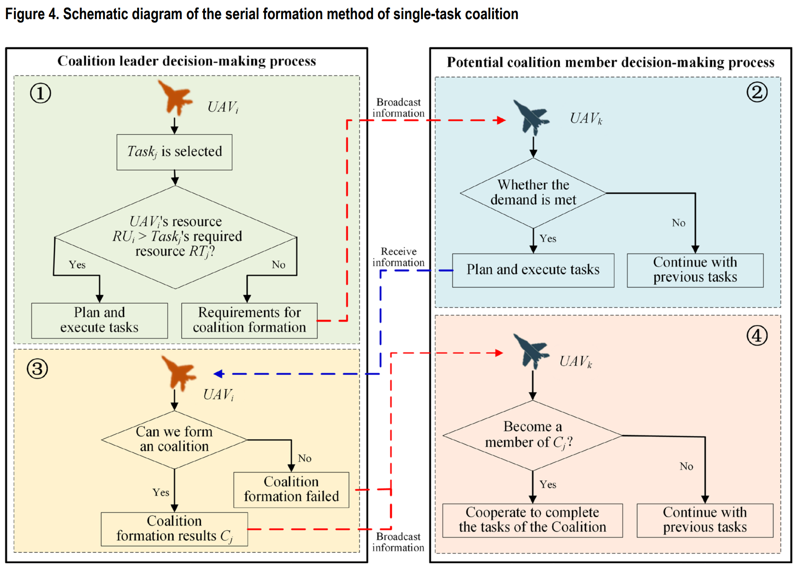
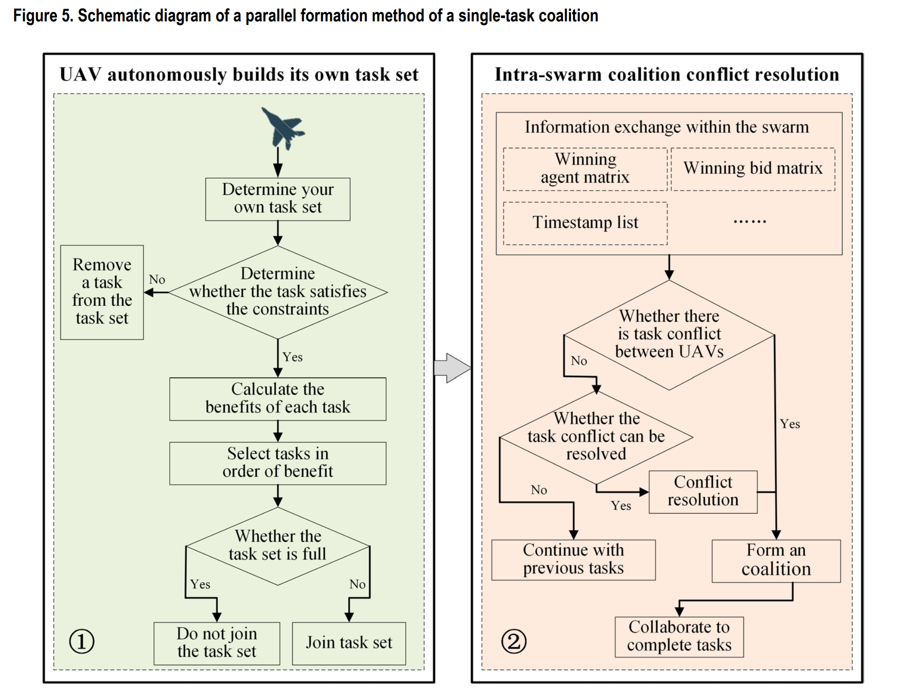
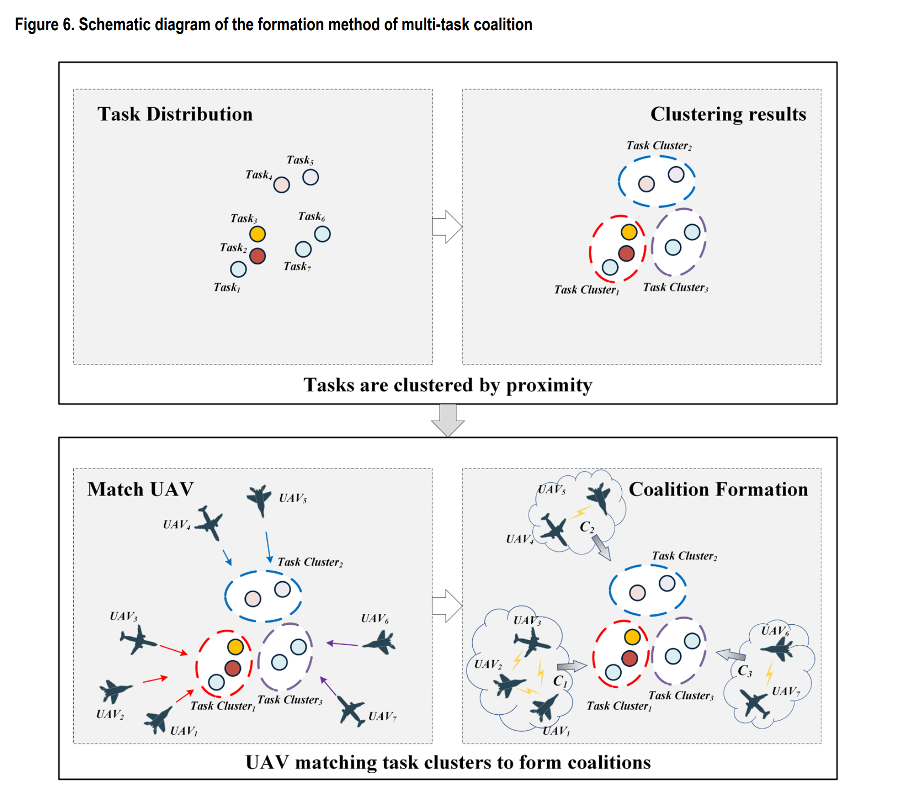
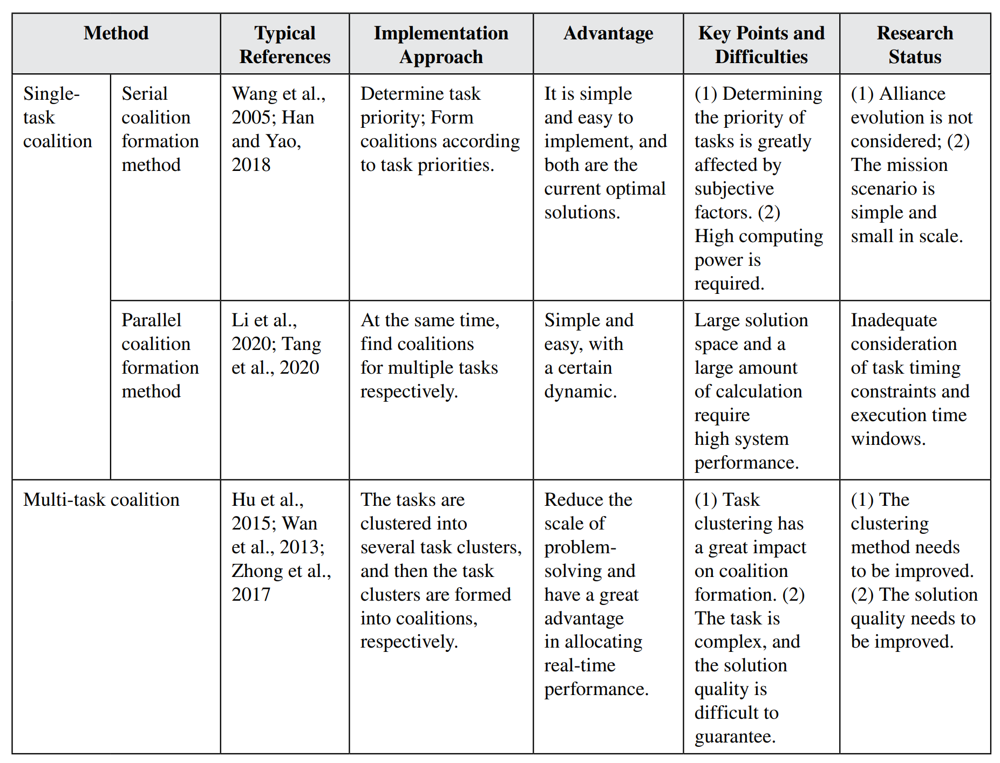
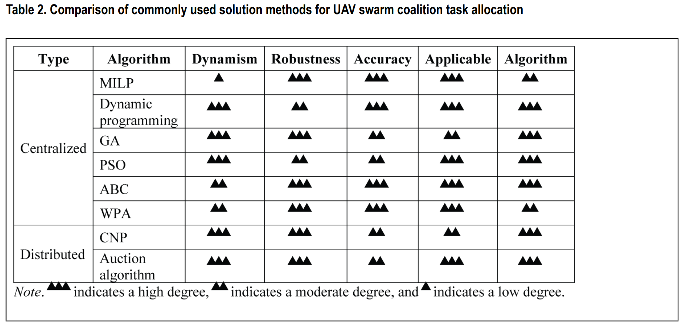

A Survey of UAV Swarm Task Allocation Based on the Perspective of Coalition Formation
- 基于联盟组建视角的无人机集群任务分配研究综述
- Husheng Wu, Qiang Peng, Meimei Shi, Lining Xing
- Source Title: International Journal of Swarm Intelligence Research (IJSIR) 13(1)
- 国际群体智能研究杂志 IF(1.1)
- Engineering University of PAP, China
Abstract
Coalition formation of unmanned aerial vehicle (UAV) swarms, an effective solution for UAV swarm task allocation, is an important technology for UAV swarms to perform real-time and efficient collaborative task allocation in a dynamic and unknown environment. This paper summarizes the task allocation methods of UAV swarm coalition comprehensively and systematically. First, starting with the related work of UAV swarm coalition task allocation, this paper introduces the basic concept, general model, and constraint index of UAV swarm coalition task allocation. Then, the specific content, research status, advantages, and disadvantages of the coalition formation methods are analyzed, respectively. Third, the commonly used solution algorithms and research status of coalition task allocation are introduced, and the advantages and disadvantages of the existing coalition formation solution algorithms are compared and analyzed. Finally, it provides significant guidance for future related research.
无人机集群联盟组建是无人机集群任务分配的有效解决方案，是无人机集群在动态未知环境中进行实时高效协同任务分配的重要技术。本文全面、系统地总结了无人机集群联盟的任务分配方法。首先，从无人机集群联合任务分配的相关工作入手，介绍了无人机集群联合任务分配的基本概念、通用模型和约束指标。然后，分别分析了联盟组建方法的具体内容、研究现状、优缺点。再次，介绍了常用的联盟任务分配求解算法和研究现状，对比分析了现有联盟组建算法的优缺点。最后，它为未来的相关研究提供了重要的指导。
- Intro
- Task allocation description of uav swarm coalition (modeling)
- task description
- constraint conditions
- mathematical model
- Coalition Formation method of uav swarm
- single task coalition
- multi-~
- comparision
- Solution method of task allocation for uav swarm coaltion
- centralized
- distributed
- comparision
- Future
- Conclusion
Introduction
With the development of modern information and communication technology and artificial intelligence technology, UAV swarm warfare with autonomous capability has attracted much attention (Qi et al., 2020). UAV swarm task allocation is the premise and guarantee to determine whether the swarm can effectively complete combat tasks. Traditional task allocation methods often abstract task allocation problems into classical combinatorial optimization problems, such as the traveling salesman problem (TSP), the vehicle routing problem (VRP), and the multi-dimensional multi-choice knapsack problem (MMKP). In addition, it is under the assumption that a single UAV in the swarm has the ability to complete tasks independently, and the UAV swarm has the ability to communicate fully. The main problems of traditional task allocation methods are: (a) the heterogeneity of UAVs and the consumption of resources are not taken into account; (b) the algorithms are highly complex, so it is difficult to give real-time allocation results; (c) most of the research is only based on a single UAV performing a single task; and (d) in previous research, the overall battlefield information had to be obtained in advance, making it difficult to realize collaborative task allocation in an unknown environment. When the task is simple, the traditional task allocation method can solve the problem well. However, in the face of the increasingly complex modern battlefield environment, and due to the limited functions played by single UAVs, many combat tasks need to be completed by multiple UAVs in the swarm (Yao et al., 2014). It is difficult to meet the needs of actual tasks by applying the traditional task allocation methods because the actual combat environment continues to change dynamically (Wei et al., 2013).
In reality, it is difficult for a single UAV in the UAV swarm to complete dynamic tasks with complex resource requirements independently. They often need multiple UAVs to form a coalition for a collaborative operation to complete tasks more efficiently and quickly. In recent years, coalition formation has become a key issue of UAV swarm task allocation, which has gained extensive attention from researchers. As shown in Figure 1, a coalition is a way to describe the form of cooperation, which means that some UAVs form a coalition to jointly complete tasks in a cooperative manner. Compared with taking a single UAV as the task execution unit in the swarm, the UAV coalition, as a UAV collection, has stronger task execution capability. At the same time, UAVs can be combined flexibly, and appropriate allies can be selected according to the task, to form the most effective coalition to complete the task and obtain the maximum benefits at the least cost. Coalition formation belongs to a special task allocation problem, which is consistent with the requirements of the dynamic and unknown battlefield environment. That is, it can ensure that UAVs can carry out real-time and efficient collaborative task allocation in the dynamic and unknown battlefield environment.
The coalition method was proposed by Shehory and Kraus (1996) and has successfully solved the task allocation problem in a multi-agent system (MAS; Rahwan et al., 2009; Zhang et al., 2010; Diao et al., 2014; Shehory and Kraus, 1998; Sarkar et al., 2022) and multi-robot system (MRS; Vig & Adams, 2006; Ahmadoun et al., 2021; Mazdin & Rinner, 2021). Since Sujit et al. (2008) first introduced the concept of the coalition into the multi-UAV system, the coalition formation method has become one of the hot methods to solve the UAV swarm task allocation problem (Wu et al., 2018; Luan et al., 2020; Ruan et al., 2021; Fei et al., 2022). Coalition formation (Sandholm et al., 1999; Shen et al., 2006; Xing et al., 2019) could effectively and quickly organize UAVs in the swarm to form a task coalition so that the swarm can flexibly and efficiently complete tasks, avoid task deadlock and resource waste, give full play to the advantages of the system, reduce task costs, and improve work efficiency. Therefore, the formation of UAVs as an operational coalition to execute combat tasks is essentially a mixed problem of sequence determination and task allocation for task execution. However, as the number of UAVs increases, the number of eligible UAV coalition will increase exponentially, so solving the coalition with maximum interests is a dynamic NP-hard (Sandhlom & Lesser, 1997). To solve this problem, researchers have achieved a series of research results around coalition structure (Voice et al., 2012; Zick et al., 2014), coalition clustering (Kashef & Kamel, 2010), solving algorithm (Macarthur et al., 2011), and formed a certain theoretical and technical foundation.
随着现代信息通信技术和人工智能技术的发展，具备自主能力的无人机集群作战备受关注（Qi 等，2020）。无人机集群任务分配是决定集群能否有效完成作战任务的前提和保障。传统的任务分配方法通常将任务分配问题抽象为经典的组合优化问题，例如旅行商问题（TSP）、车辆路径问题（VRP）以及多维多选择背包问题（MMKP）。此外，这些方法基于以下假设：集群中的单个无人机具备独立完成任务的能力，且无人机集群具备完全通信能力。
传统任务分配方法的主要问题在于：
- （a）未考虑无人机的异构性及资源消耗；
- （b）算法复杂度高，难以实时生成分配结果；
- （c）大多数研究仅基于单个无人机执行单一任务；
- （d）以往研究需要预先获取整体战场信息，难以在未知环境中实现协同任务分配。
当任务较为简单时，传统任务分配方法能够较好地解决问题。然而，面对日益复杂的现代战场环境，由于单个无人机的功能有限，许多作战任务需要集群中的多个无人机协同完成（Yao 等，2014）。由于实际作战环境动态变化，传统任务分配方法难以满足实际任务需求（Wei 等，2013）。
在现实中，无人机集群中的单个无人机难以独立完成资源需求复杂的动态任务。通常需要多个无人机组成联盟，通过协同操作来更高效、更快速地完成任务。近年来，联盟形成已成为无人机集群任务分配的关键问题，受到研究者的广泛关注。如图 1 所示，联盟是描述合作形式的一种方式，即部分无人机组成联盟，以协作方式共同完成任务。与将单个无人机作为集群中的任务执行单元相比，无人机联盟作为一个无人机集合体，具备更强的任务执行能力。同时，无人机可以灵活组合，根据任务需求选择合适的盟友，形成最有效的联盟以完成任务，并以最小成本获得最大收益。联盟形成属于一种特殊的任务分配问题，符合动态和未知战场环境的需求，即能够确保无人机在动态和未知的战场环境中进行实时高效的协同任务分配。
联盟方法由 Shehory 和 Kraus（1996）提出，并成功解决了多智能体系统（MAS；Rahwan 等，2009；Zhang 等，2010；Diao 等，2014；Shehory 和 Kraus，1998；Sarkar 等，2022）和多机器人系统（MRS；Vig & Adams，2006；Ahmadoun 等，2021；Mazdin & Rinner，2021）中的任务分配问题。
自 Sujit 等（2008）首次将联盟概念引入多无人机系统以来，联盟形成方法已成为解决无人机集群任务分配问题的热门方法之一（Wu 等，2018；Luan 等，2020；Ruan 等，2021；Fei 等，2022）。
联盟形成（Sandholm 等，1999；Shen 等，2006；Xing 等，2019）能够有效且快速地组织集群中的无人机形成任务联盟，使集群能够灵活高效地完成任务，避免任务死锁和资源浪费，充分发挥系统优势，降低任务成本，提高工作效率。因此，将无人机组成作战联盟以执行战斗任务，本质上是一个任务执行的序列确定与任务分配的混合问题。然而，随着无人机数量的增加，符合条件的无人机联盟数量将呈指数级增长，因此求解具有最大利益的联盟是一个动态的 NP 难问题（Sandhlom & Lesser，1997）。为解决这一问题，研究者围绕联盟结构（Voice 等，2012；Zick 等，2014）、联盟聚类（Kashef & Kamel，2010）和求解算法（Macarthur 等，2011）取得了一系列研究成果，并形成了一定的理论和技术基础。

Task allocation description of uav swarm coalition
2.1 Task description
Heterogeneous UAV swarms mainly perform tasks on a large number of known and unknown targets in the task environment. Considering that performing tasks on the target needs to meet the resource constraints of the target, the resources carried by a single UAV are limited and may not be able to meet the requirements. For known targets, heterogeneous UAV swarms can directly select tasks and form UAV coalitions to execute them; for unknown targets, the UAV swarm continuously discovers new targets and triggers task allocation for the new targets until the UAV swarm completes all tasks within the task area. As shown in Figure 2, the basic process of task allocation of a UAV swarm coalition mainly includes five basic steps: task selection, coalition formation, task execution, task completion, and coalition dissolution. The task allocation problem of a heterogeneous UAV swarm coalition can be represented by the six-tuple ⟨ U , M , T , E , C , O ⟩, where U is the set of UAVs in the swarm; M refers to the collection of targets in the mission area, including enemy positions, vehicles, and equipment; T is the task type set contained by each target, including reconnaissance task, and attack task; E refers to the mission environment, such as environmental threat, and no-fly zone; C is the set of constraints related to the task execution of heterogeneous swarm; and O is the overall goal of UAV swarm to complete tasks, such as the shortest time and the lowest track cost.
异构无人机集群主要在任务环境中对大量已知和未知目标执行任务。考虑到对目标执行任务需要满足目标的资源约束，而单个无人机携带的资源有限，可能无法满足需求。对于已知目标，异构无人机集群可以直接选择任务并形成无人机联盟来执行；对于未知目标，无人机集群会不断发现新目标并触发对新目标的任务分配，直到无人机集群完成任务区域内的所有任务。
如图 2 所示，无人机集群联盟任务分配的基本流程主要包括五个基本步骤：任务选择、联盟形成、任务执行、任务完成和联盟解散。
异构无人机集群联盟的任务分配问题可以用六元组 $⟨ U , M , T , E , C , O ⟩$ 表示，其中
- U 是集群中无人机的集合；
- M 指任务区域内目标的集合，包括敌方位置、车辆和装备；
- T 是每个目标包含的任务类型集合，包括侦察任务和攻击任务；
- E 指任务环境，例如环境威胁和禁飞区；
- C 是与异构集群任务执行相关的约束集合；
- O 是无人机集群完成任务的总体目标，例如最短时间和最低轨迹成本。
Figure 2. Basic process of UAV swarm coalition task allocation
2.2 Constraint Conditions
When forming a coalition for UAV swarms, one should not only consider constraint conditions such as resource allocation balance, task dynamics, UAV communication range, and communication delay within the swarm but also pay attention to various types of constraints such as UAV kinematics constraints, target resource constraints, UAV arrival time constraints, and UAV collision avoidance constraints. Generally, the formed coalition needs to meet the following constraints and conditions:
- In order to improve the efficiency of task completion, it is required to complete tasks in the shortest time.
- In order to ensure the rapid completion of tasks and the success rate of completion, all coalition members are required to perform tasks at the same time.
- In order to improve the utilization of UAV resources and the number of tasks completed within unit time, the size of the coalition is required to be the smallest. If the size of the coalition is minimized each time, more UAV coalitions can be formed.
- In order to ensure that the task can be completed, the total resources owned by all coalition members in the coalition are required to meet the resource requirements of the task.
2.3 Mathematical Model
It is assumed that there are $N{M}$ targets, and each target has $N{T}$ tasks and a UAV swarm composed of $N_{U}$ UAVs. The task allocation problem of heterogeneous UAV swarm coalition can be generally described as: In the task environment, under the requirements of meeting all constraints, seek a scheme for the formation of a UAV swarm coalition, to complete the current task to the greatest extent and optimize the overall objectives of task allocation, such as cost and benefit. Then the general mathematical model (Whitten, 2010; Butler & Hays, 2015) of the task allocation problem of heterogeneous UAV swarm coalition can be expressed as follows:
where $r{ij}$ k is the benefit of $UAV{i}$ ( $i = 1, 2, . . ., N{U}$ ) performing the k th ( $k = 1, 2, . . ., N{T}$ ) task of target j ( $j = 1, 2, . . ., N{M}$ ); $x{ij}$ k is the task allocation decision variable $x{ij}^k ∈ { 1 0 }$ , ; $x{ij}^k = 1$ indicates that $UAV{i}$ executes the $k$ th task of target j-otherwise, $x{ij}^ k = 0$ - and $C · ( )$ is the relevant constraint.
It should be noted that this formula represents a general model of task allocation for UAV swarm coalitions. In the specific task allocation process, the model needs to be modified and refined according to the specific task background and actual task environment so as to meet the actual requirements of the tasks.
Coalition Formation method of uav swarm
UAV swarms form coalitions to perform tasks that cannot be accomplished by a single UAV, effectively improving the success rate and efficiency of task execution. The difference way of forming the coalition directly affects the efficiency of the UAV swarm in completing the task. Therefore, since coalition formation was used for UAV swarm task allocation, domestic and foreign scholars have carried out a lot of research and achieved fruitful results. Coalitions can be divided into different types based on different perspectives. From the perspective of coalition generation, it can be divided into serial coalition and parallel coalition. From the perspective of coalition structure, it can be divided into simple coalitions and complex coalitions. From the perspective of the number of tasks performed by the same coalition, it can be divided into single-task coalitions and multi-task coalitions. This section reviews the coalition formation methods regarding two aspects: the single-task coalition and multi-task coalition.
无人机集群通过形成联盟来执行单个无人机无法完成的任务，从而有效提高任务执行的成功率和效率。联盟形成的方式直接影响无人机集群完成任务的效率。因此，自联盟形成方法被用于无人机集群任务分配以来，国内外学者开展了大量研究并取得了丰硕成果。根据不同的视角，联盟可以分为多种类型。从联盟生成的角度，可以分为串行联盟和并行联盟；从联盟结构的角度，可以分为简单联盟和复杂联盟；从同一联盟执行任务数量的角度，可以分为单任务联盟和多任务联盟。本节将从单任务联盟和多任务联盟两个方面对联盟形成方法进行综述。

Figure 3. Schematic diagram of UAV swarm coalition
3.1 Single-Task Coalition
As shown in Figure 3(a), in a task environment, a coalition that only undertakes one task is called a single-task coalition. "Specific task - Specific coalition" is the main form of single-task coalition. The formation of a single-task coalition is to find a UAV coalition that can complete a certain task and has the best coalition result in a UAV swarm. The formation methods of single-task coalition mainly include serial coalition formation method and parallel coalition formation method.
如图 3(a)所示，在任务环境中，仅承担一个任务的联盟称为单任务联盟。“特定任务-特定联盟”是单任务联盟的主要形式。单任务联盟的形成是在无人机集群中寻找能够完成某一任务且具有最佳联盟结果的无人机联盟。单任务联盟的形成方法主要包括串行联盟形成方法和并行联盟形成方法。
3.1.1 Serial Coalition Formation Method
The serial coalition formation method refers to finding the UAV coalition with the largest global benefit for each current task in turn in the task environment. The main process of the method is as follows: The UAV swarm first determines the task priority according to the relevant requirements of the task execution and then selects the global optimal UAV for the task with the highest current priority in the task priority sequence in turn. As shown in Figure 4, when the UAV carries insufficient resources to complete the strike task of the target alone, the UAV becomes the initiator of coalition formation and broadcasts the specific information of the discovered target to other UAVs in the swarm (Wang et al., 2005). Then, other UAVs respond to the coalition initiator according to their own resources. The initiator of the coalition integrates all the feedback information, weighs the overall interests, and forms the current global optimal coalition to respond to the task. After the current task is completed, the UAV coalition will be dissolved, and coalition members can continue to participate in other tasks. This method is simple and widely used, but it has the following problems: First, the determination of task priority is greatly influenced by subjective factors, and the distribution results are random. Second, each task is solved in turn, which requires high computing power in the system. Third, the evolution of the coalition is not considered. Whenever new tasks are added to the task set, they need to be re-aligned according to the formation method, which will inevitably have a lot of computing and communication overhead, resulting in a great waste of computing resources.
串行联盟形成方法是指在任务环境中依次为每个当前任务寻找具有最大全局收益的无人机联盟。该方法的主要流程如下：
- 无人机集群首先根据任务执行的相关要求确定任务优先级，然后依次在任务优先级序列中为当前优先级最高的任务选择全局最优的无人机。
- 如图 4 所示，当无人机携带的资源不足以单独完成目标的打击任务时，该无人机成为联盟形成的发起者，并向集群中的其他无人机广播所发现目标的具体信息（Wang 等，2005）。
- 随后，其他无人机根据自身资源对联盟发起者作出响应。联盟发起者整合所有反馈信息，权衡整体利益，形成当前全局最优联盟以响应任务。
- 当前任务完成后，无人机联盟将解散，联盟成员可以继续参与其他任务。
该方法简单且应用广泛，但存在以下问题：
- 首先，任务优先级的确定受主观因素影响较大，分配结果具有随机性；
- 其次，每个任务依次求解，对系统计算能力要求较高；
- 第三，未考虑联盟的演化。每当任务集中新增任务时，都需要按照形成方法重新排列，这必然会产生大量的计算和通信开销，导致计算资源的极大浪费。

Figure 4. Schematic diagram of the serial formation method of single-task coalition
In order to avoid coalition deadlock and resource waste, Wang et al. (2005) proposed a coalition formation strategy based on an improved task matching calculation method. When dealing with the current task, this method can selectively learn from the historical experience of the system and give full play to its learning ability. It can effectively reduce the search time and computation of the coalition generation and has good realizability. Han and Yao (2018) decomposed all tasks into different types of sub-tasks and built a manned-UAV swarm holon coalition (SHC) formation model according to UAV combat capabilities and sub-task resource requirements. The model can effectively solve the problem of SHC formation, but it does not consider the execution time and execution situation of the task, and the execution of the task is difficult to continue in case of emergencies. Lin et al. (2013) put forward an online task allocation problem model based on an idle time window, which considered the time constraints and efficiency requirements of multi-UAV task allocation problem, and effectively solved the real-time and effectiveness of solving the multi-UAV task allocation problem. Liu et al. (2015) designed a coalition formation method for heterogeneous multi-UAV cooperative search and strike in an unknown environment, minimizing target strike time, minimizing coalition size as optimization indicators, and satisfying simultaneous strike and resource requirements as constraints. This method has high real-time performance and can be well adopted in unknown environments.
- 为了避免联盟死锁和资源浪费，Wang 等人（2005）提出了一种基于改进任务匹配计算方法的联盟形成策略。该方法在处理当前任务时，能够有选择地借鉴系统的历史经验，充分发挥其学习能力，从而有效减少联盟生成的搜索时间和计算量，并具有良好的可实现性。
- Han 和 Yao（2018）将所有任务分解为不同类型的子任务，并根据无人机的作战能力和子任务的资源需求，构建了有人-无人机集群全息联盟（SHC）形成模型。该模型能够有效解决 SHC 形成问题，但未考虑任务的执行时间和执行情况，在突发情况下任务的执行难以持续。
- Lin 等人（2013）提出了一种基于空闲时间窗口的在线任务分配问题模型，该模型考虑了多无人机任务分配问题的时间约束和效率要求，有效解决了多无人机任务分配问题的实时性和有效性。
- Liu 等人（2015）设计了一种适用于未知环境中异构多无人机协同搜索与打击的联盟形成方法，以最小化目标打击时间、最小化联盟规模为优化指标，并满足同时打击和资源需求为约束条件。该方法具有较高的实时性，能够在未知环境中得到良好应用。
3.1.2 Parallel Coalition Formation Method
Compared with the serial coalition formation method, the parallel coalition formation method has its uniqueness: in the task environment, the coalitions are searched for multiple tasks at the same time to maximize the overall benefit. Due to the existence of multiple coalitions generated at the same time and the arbitrary splitting and combination of individual abilities, there will be countless possible solutions to the problem, which requires a large amount of calculation and high system performance. Usually, parallel coalition formation methods include two processes: UAV task set construction and coalition formation conflict resolution. During the task set construction process, each UAV selects tasks to add to its own task set for the purpose of maximizing its own benefits. After the task set is constructed, the UAV needs to exchange information with other UAVs in the swarm, mediate task conflicts according to certain action rules, and form a UAV coalition suitable for each task to obtain conflict-free task allocation results.
与串行联盟形成方法相比，并行联盟形成方法具有其独特性：在任务环境中，同时为多个任务搜索联盟，以实现整体效益的最大化。由于同时生成的多个联盟以及个体能力的任意拆分与组合，问题的可能解将不计其数，这需要大量的计算和高系统性能。
通常，并行联盟形成方法包括两个过程：无人机任务集构建和联盟形成冲突解决。
- 在任务集构建过程中，每个无人机选择任务加入自己的任务集，以实现自身效益的最大化。
- 任务集构建完成后，无人机需要与集群中的其他无人机交换信息，根据一定的行动规则调解任务冲突，并形成适合每个任务的无人机联盟，以获得无冲突的任务分配结果。

Figure 5. Schematic diagram of a parallel formation method of a single-task coalition
Tang et al. (2020) extended the distributed consistency package theory to solve the task allocation problem of the heterogeneous multi-UAV coalition under the conditions of task load resource constraints, task-coupling relationship constraints, and execution window constraints. First, each UAV selects tasks to construct its own task set according to the principle of maximum benefit. Second, after UAVs share the winning agent matrix, winning bid matrix, timestamp list, and other information with adjacent UAVs, the conflict mediation of task allocation decision of heterogeneous multi-UAV coalition is realized based on the improved coordination principle. Li et al. (2020) aimed at the task allocation problem of the heterogeneous multi-UAV dynamic coalition under complex constraints. Based on the method proposed by Tang et al. (2020), this approach obtained efficient and reasonable allocation results, providing three dynamic allocation strategies: a no-re-planning dynamic allocation strategy, a fully re-planning dynamic allocation strategy, and a partially re-planning dynamic allocation strategy. At present, insufficient consideration has been given to task timing constraints and execution time windows in related research, and there is a lack of research on dynamic task allocation of multiUAV coalition under timing coupling relationship and time window constraints.
- Tang 等人（2020）扩展了分布式一致性包理论，解决了在任务负载资源约束、任务耦合关系约束和执行窗口约束条件下的异构多无人机联盟任务分配问题。首先，每个无人机根据最大效益原则选择任务构建自己的任务集。其次，在无人机与相邻无人机共享获胜代理矩阵、获胜投标矩阵、时间戳列表等信息后，基于改进的协调原则实现异构多无人机联盟任务分配决策的冲突调解。
- Li 等人（2020）针对复杂约束下的异构多无人机动态联盟任务分配问题，基于 Tang 等人（2020）提出的方法，获得了高效合理的分配结果，提供了三种动态分配策略：无重新规划动态分配策略、完全重新规划动态分配策略和部分重新规划动态分配策略。
- 目前，相关研究对任务时序约束和执行时间窗口的考虑不足，缺乏在时序耦合关系和时间窗口约束下的多无人机联盟动态任务分配研究。
3.2 Multi-Task Coalition 多任务联盟
As shown in Figure 3(b), a UAV coalition that undertakes multiple tasks at the same time during the execution of a UAV swarm is called a multi-task coalition . The task-cluster coalition is the main form of multi-task coalition. The formation of multi-task coalition mainly includes two processes: task clustering and UAV matching task clusters. That is, during task execution, all tasks to be executed are clustered into several task clusters according to certain principles, and then the task clusters are assigned to the UAV coalition for execution. The formation of a multi-task coalition needs to solve the following two problems: (a) ensuring that tasks with similar characteristics in all tasks are clustered into one cluster, so as to effectively reduce the range cost of UAV swarm tasks, and (b) determining UAVs are responsible for the corresponding task clusters, so as to effectively reduce the cost of capabilities including communication and resources. Therefore, in the process of coalition formation and evolution, it is necessary to consider the characteristics of task distribution, dynamic uncertainty of battlefield environment, UAV swarm capability, and other factors, and use simple rules and protocols to realize the matching quickly and efficiently between task clustering and UAV optimal coalition.
如图 3(b)所示，在无人机集群执行任务过程中，同时承担多个任务的无人机联盟被称为多任务联盟。任务-集群联盟是多任务联盟的主要形式。多任务联盟的形成主要包括两个过程：任务聚类和无人机匹配任务集群。即在任务执行过程中，将所有待执行任务按照一定原则聚类为若干任务集群，然后将任务集群分配给无人机联盟执行。
多任务联盟的形成需要解决以下两个问题：
- （a）确保所有任务中具有相似特征的任务被聚类到一个集群中，从而有效降低无人机集群任务的范围成本；
- （b）确定无人机负责相应的任务集群，从而有效降低通信和资源等能力的成本。
因此，在联盟形成和演化过程中，需要考虑任务分布特征、战场环境的动态不确定性、无人机集群能力等因素，并利用简单的规则和协议快速高效地实现任务聚类与无人机最优联盟之间的匹配。

Figure 6. Schematic diagram of the formation method of multi-task coalition
Scholars have done a lot of research on the formation of multi-task coalitions. Hu et al. (2015) divided the multi-UAV task allocation problem into three sub-problems: task clustering, task cluster allocation, and task allocation within a cluster. Each UAV formed an actual coalition to execute tasks within each cluster. This method reduces the scale of problem-solving and has great advantages in real-time allocation. Wan et al. (2013) used the coalition formation strategy, "first task grouping, then platformed matching to task group," which effectively solved the problem of forming a coalition when manned or unmanned aerial vehicles perform tasks. Zhong et al. (2017) adopted the phased formation strategy of task clustering - platform matching and successfully solved the problem of the manned-unmanned aerial mission coalition formation. In general, the existing research on the formation method of UAV swarm multi-task coalition has made great progress, but there are still several aspects that need to be improved. First, the quality of task clustering results will directly affect the subsequent coalition formation process, and the clustering method needs to be improved. Second, in the process of platform matching, since there may be multiple optimization objectives, the solution quality still needs to be improved.
学者们对多任务联盟的形成进行了大量研究。
- Hu 等人（2015）将多无人机任务分配问题分为三个子问题：任务聚类、任务集群分配和集群内任务分配。每个无人机形成一个实际联盟来执行每个集群内的任务。该方法减少了问题求解的规模，在实时分配方面具有很大优势。
- Wan 等人（2013）采用“先任务分组，后平台匹配任务组”的联盟形成策略，有效解决了有人或无人机执行任务时的联盟形成问题。
- Zhong 等人（2017）采用任务聚类-平台匹配的分阶段形成策略，成功解决了有人-无人机任务联盟的形成问题。
总体而言，现有关于无人机集群多任务联盟形成方法的研究取得了很大进展，但仍有一些方面需要改进。首先，任务聚类结果的质量将直接影响后续联盟形成过程，聚类方法需要改进。其次，在平台匹配过程中，由于可能存在多个优化目标，解决方案的质量仍需提高。
3.3 Comparison of Coalition Formation Methods
Based on the relevant research at home and abroad, Table 1 specifically compares and analyzes the basic situation of the formation method of the UAV swarm coalition.
Table 1. Comparison of UAV swarm coalition formation methods
| Method | Method | Typical References | Implementation Approach | Advantage | Key Points and Difficulties | Research Status |
|---|---|---|---|---|---|---|
| Single- task coalition | Serial coalition formation method | Wang et al., 2005; Han and Yao, 2018 | Determine task priority; Form coalitions according to task priorities. | It is simple and easy to implement, and both are the current optimal solutions. | (1) Determining the priority of tasks is greatly affected by subjective factors. (2) High computing power is required. | (1) Alliance evolution is not considered; (2) The mission scenario is simple and small in scale. |
| Parallel coalition formation method | Li et al., 2020; Tang et al., 2020 | At the same time, find coalitions for multiple tasks respectively. | Simple and easy, with a certain dynamic. | Large solution space and a large amount of calculation require high system | Inadequate consideration of task timing constraints and execution time windows. | |
| Multi-task coalition | Multi-task coalition | Hu et al., 2015; Wan et al., 2013; Zhong et al., 2017 | The tasks are clustered into several task clusters, and then the task clusters are formed into coalitions, respectively. | Reduce the scale of problem- solving and have a great advantage in allocating real-time performance. | performance. (1) Task clustering has a great impact on coalition formation. (2) The task is complex, and the solution quality is difficult to guarantee. | (1) The clustering method needs to be improved. (2) The solution quality needs to be improved. |

Solution method of task allocation for uav swarm coalition
The main purpose of the task allocation problem for a UAV swarm coalition is to select an appropriate coalition for tasks, which is essentially a combinatorial optimization problem. Therefore, choosing an efficient solution method is a necessary condition to successfully solve the coalition task allocation problem. At present, there are two main methods for solving the task allocation problem of the UAV swarm coalition: the centralized solution method (Guruacharya et al., 2013; Klusch & Gerber, 2002; Das, Misra, & Roy, 2015; Anderson et al., 2004; Lerman et al., 2006; Wang & Liu, 2021) and the distributed solution method (Michalak et al., 2010; Tanzil et al., 2016; Kong et al., 2017; Johnson et al., 2011; Das, McGinnity, et al., 2015; Stranders et al., 2012).
4.1 Centralized Solution Method
The main research ideas of the centralized solution method can be summarized as follows: Based on the global environment information, the task allocation is modeled into the corresponding resource allocation model, and then the centralized algorithm is used for the solution. As shown in Figure 7, the commonly used centralized solving methods are divided into two categories: optimization methods and intelligent optimization algorithms.
Figure 7. Commonly used centralized solving methods

4.1.1 Optimization Method
The optimization method solves the optimal solution of the problem under the condition of satisfying the multiple current constraints. The commonly used optimization methods mainly include integer linear programming method (ILP), constraint programming method, and dynamic programming method.
优化方法是在满足多种当前约束条件下求解问题的最优解。常用的优化方法主要包括整数线性规划法（ILP）、约束规划法和动态规划法。
4.1.1.1 Integer Linear Programming Method
The integer linear programming (ILP) method establishes the objective function and related constraints and seeks a solution for its extreme value. Although the ILP method is flexible, easy to operate, with relatively fast solution speed, the model built by this method is relatively simple, which cannot represent the complex task environment with poor fault tolerance and is not ideal for solving multimachine and multi-objective allocation problems with different models. The commonly used integer programming methods are the matrix homework method, the branch and bound method, and the mixed integer linear programming algorithm (MILP). Shetty et al. (2008) abstracted the cooperative allocation and path planning problem of multiple UAVs attacking fixed targets into a MILP problem, used a centralized algorithm to solve it, and achieved good results, but the real-time performance of the solution was poor.
整数线性规划法（ILP）通过建立目标函数和相关约束条件，并寻求其极值解。尽管 ILP 方法灵活、易于操作且求解速度相对较快，但该方法建立的模型较为简单，无法表示复杂的任务环境，容错性较差，在解决不同模型的多机多目标分配问题时效果不理想。常用的整数规划方法包括矩阵作业法、分支定界法和混合整数线性规划算法（MILP）。Shetty 等人（2008）将多无人机协同分配和路径规划问题抽象为 MILP 问题，采用集中式算法求解并取得了良好效果，但求解的实时性较差。
4.1.1.2 Dynamic Programming Method
Dynamic programming refers to a method of transforming multi-stage decision-making problems into single-stage optimization problems in order to reduce the difficulty of decision-making problems. Dynamic refers to the changes and transitions of states caused by changes in the decision sequence and steps in the multi-stage decision-making of a problem. The algorithm has no definite steps, and the corresponding optimization algorithm needs to be designed in combination with the idea of dynamic programming. This method has high implementation efficiency but is prone to the curse of dimensionality. Xu and Liu (2015) designed a coalition constraint dynamic programming algorithm for the coalition structure generation of multi-agent systems, proving that the time complexity of the algorithm was $O(3^n)$, and further discussed the impact of the number of agents and the number of coalition constraints on the algorithm.
动态规划法是指将多阶段决策问题转化为单阶段优化问题，以降低决策问题的难度。动态指的是在多阶段决策中，由于决策序列和步骤的变化引起的状态变化和转移。该算法没有固定的步骤，需要结合动态规划的思想设计相应的优化算法。这种方法实现效率较高，但容易出现维度灾难问题。Xu 和 Liu（2015）针对多智能体系统的联盟结构生成问题，设计了一种联盟约束动态规划算法，证明了该算法的时间复杂度为 O(3^n)，并进一步讨论了智能体数量和联盟约束数量对算法的影响。
4.1.1.3 Other Optimization Methods
Manathara et al. (2011) took the minimum strike time and minimum coalition size as the goal and proposed a polynomial-time formation strategy for UAV cooperative coalitions to perform inspection and strike tasks on fixed targets. On the method proposed by Manathara et al. (2011), Sujit et al. (2014) considered the limited communication range and target movement of UAVs, avoided the network congestion caused by broadcasting, and adopted the resource distribution strategy one by one, but did not consider the impact of the resource distribution strategy on the execution of subsequent tasks in the current task execution. Zhong et al. (2017) established a mathematical model with minimizing task completion time as the objective function for heterogeneous multi-UAV muli-task execution and designed a phased greedy planning algorithm (PGPA) to solve the model, which improved the collaborative ability of multi-UAV multi-task execution. Bayram and Bozma (2016) came up with a coalition formation algorithm based on merge and split (CF-MS). The algorithm can be well applied to the formation of robot coalitions in dynamic scenarios, but it is difficult to deal with the formation of large-scale coalitions.
- Manathara 等人（2011）以最小打击时间和最小联盟规模为目标，提出了一种多项式时间的无人机协同联盟形成策略，用于对固定目标执行侦察和打击任务。
- 在 Manathara 等人（2011）提出的方法基础上，Sujit 等人（2014）考虑了无人机的有限通信范围和目标移动性，避免了广播引起的网络拥塞，并采用逐一资源分配策略，但未考虑当前任务执行中资源分配策略对后续任务执行的影响。
- Zhong 等人（2017）建立了以最小化任务完成时间为目标函数的异构多无人机多任务执行数学模型，并设计了一种分阶段贪婪规划算法（PGPA）来求解该模型，提高了多无人机多任务执行的协同能力。
- Bayram 和 Bozma（2016）提出了一种基于合并与拆分（CF-MS）的联盟形成算法。该算法能够很好地应用于动态场景中的机器人联盟形成，但难以处理大规模联盟的形成。
According to the current research results, the optimization method is simple, flexible, and easy to implement, and it can flexibly deal with constraints to seek a solution for practical problems. In the case of small-scale tasks, the optimization method can quickly find the optimal solution for task allocation. However, when the task allocation scale is large, the time consumed by the algorithm increases sharply, and the optimization method is difficult to meet the real-time requirements in a dynamic environment. Therefore, the optimization method is only suitable for task allocation of an off-line coalition for UAV swarms which has low requirements on time and a small number of tasks.
根据目前的研究成果，优化方法简单、灵活且易于实现，能够灵活处理约束条件以寻求实际问题的解决方案。在小规模任务情况下，优化方法能够快速找到任务分配的最优解。然而，当任务分配规模较大时，算法消耗的时间急剧增加，优化方法难以满足动态环境中的实时性要求。因此，优化方法仅适用于对时间要求较低且任务数量较少的无人机集群离线联盟任务分配。
4.1.2 Intelligent Optimization Algorithm 智能优化算法
An intelligent optimization algorithm (Yang et al., 2018; Wang, 2001) is a random search method developed under the inspiration of natural phenomena or social behaviors. This kind of algorithm is widely used and can be applied to large-scale and nonlinear problems with strong universality. The algorithms commonly used in UAV swarm coalition task allocation are the evolutionary algorithm and the swarm intelligence algorithm.
智能优化算法（Yang 等，2018；Wang，2001）是一种在自然现象或社会行为启发下发展起来的随机搜索方法。这类算法应用广泛，能够适用于大规模和非线性问题，具有较强的普适性。在无人机集群联盟任务分配中常用的算法包括进化算法和群体智能算法。
4.1.2.1 Evolutionary Algorithm
An evolutionary algorithm (Zheng, 2007) achieves the purpose of searching for the optimal solution by simulating the biological evolution process proposed by Darwin. Based on this algorithm, in the task allocation stage, different actions are taken to perform task allocation for different goals and tasks, so that the overall allocation can be optimized. Representative algorithms in evolutionary algorithms include genetic algorithms (GA; Zhang et al., 2012) and differential evolution algorithms, which are widely used in UAV swarm coalition task allocation. Wu et al. (2017) took the heterogeneous multi-UAV cooperative air defense suppression task as the background and applied an improved genetic algorithm to solve the multi-UAV agent cooperative task allocation problem considering constraints such as aircraft load type and end entry target angle. Xiao et al. (2018) aimed at the target search and strike task of multiple heterogeneous UAVs in an unknown environment, focused on the UAV resource constraints, and designed a rapid coalition establishment method based on a parallel non-dominated genetic algorithm with elite strategy (NSGA-II). This method has high real-time performance but does not consider the impact of communication constraints such as communication distance and communication delay on coalition formation. Rauniyar and Muhuri (2016) presented a genetic algorithm based on random immigration and elite mechanism, which can only quickly seek the optimal solution to the problem of coalition formation in relatively simple application scenarios. It can be seen that the evolutionary algorithm has the advantages of strong global search ability, high search efficiency, and strong robustness, and can find the optimal solution in a short time, but the algorithm is easy to fall into local optimum when solving large-scale combinatorial optimization problems.
进化算法（Zheng，2007）通过模拟达尔文提出的生物进化过程，实现搜索最优解的目的。基于该算法，在任务分配阶段，针对不同的目标和任务采取不同的行动进行任务分配，从而实现整体分配的优化。进化算法中的代表性算法包括遗传算法（GA；Zhang 等，2012）和差分进化算法，这些算法在无人机集群联盟任务分配中得到了广泛应用。Wu 等（2017）以异构多无人机协同防空压制任务为背景，应用改进的遗传算法解决了考虑飞机载荷类型和末端进入目标角度等约束的多无人机代理协同任务分配问题。Xiao 等（2018）针对未知环境中多异构无人机的目标搜索与打击任务，重点考虑了无人机资源约束，设计了一种基于精英策略的并行非支配遗传算法（NSGA-II）的快速联盟建立方法。该方法具有较高的实时性，但未考虑通信距离和通信延迟等通信约束对联盟形成的影响。Rauniyar 和 Muhuri（2016）提出了一种基于随机移民和精英机制的遗传算法，该算法只能在相对简单的应用场景中快速寻求联盟形成问题的最优解。可以看出，进化算法具有全局搜索能力强、搜索效率高和鲁棒性强等优点，能够在较短时间内找到最优解，但在解决大规模组合优化问题时，算法容易陷入局部最优。
4.1.2.2 Swarm Intelligence Optimization Algorithm
The inspiration for the swarm intelligence optimization algorithm comes from the behavior of biological groups in nature, which means that multiple individuals representing candidate solutions are formed into a group, and the purpose of optimization is achieved through the information interaction between some or all of them. Commonly used swarm intelligence algorithms include the ant colony algorithm (Dorigo & Stützle, 2003), particle swarm optimization (PSO; Kennedy & Eberhart, 1995), artificial bee colony algorithm (ABC), and wolf pack algorithm (WPA). Sujit et al. (2008) introduced the concept of coalition from a multi-agent system into a multi-UAV system for the first time, established a mathematical model for forming an optimal coalition, and used a PSO algorithm to seek a solution. However, for this method, all the information about the task environment needs to be obtained in advance, and the real-time performance is low. Jiang et al. (2009) introduced a discrete particle swarm algorithm to solve the problem of coalition formation. The random disturbance of particles was used to avoid the premature of the algorithm. A binary coding was designed to realize the parallel generation of a complex coalition. Through the coding feasibility check, conflict resolution, and compensation strategy, the resource conflict and coalition deadlock in the solution process were avoided.
群体智能优化算法的灵感来源于自然界中生物群体的行为，即通过将代表候选解的多个个体组成一个群体，并通过部分或全部个体之间的信息交互实现优化目的。常用的群体智能算法包括蚁群算法（Dorigo & Stützle，2003）、粒子群优化算法（PSO；Kennedy & Eberhart，1995）、人工蜂群算法（ABC）和狼群算法（WPA）。Sujit 等（2008）首次将多智能体系统中的联盟概念引入多无人机系统，建立了形成最优联盟的数学模型，并使用粒子群优化算法进行求解。然而，该方法需要预先获取任务环境的所有信息，实时性较低。Jiang 等（2009）引入离散粒子群算法解决联盟形成问题，通过粒子的随机扰动避免算法早熟，设计了二进制编码以实现复杂联盟的并行生成，并通过编码可行性检查、冲突解决和补偿策略，避免了求解过程中的资源冲突和联盟死锁。
Wang et al. (2018) studied the task allocation of swarm networking, designed a hierarchical iterative task allocation model, and proposed a task allocation algorithm for UAV swarm networking based on PSO-ICWPA with the swarm intelligence optimization algorithm of low complexity and superior performance as the basis. This method has good convergence and rapidity and is useful for solving task allocation problems of different scales. The research shows that the swarm intelligence optimization algorithm has strong search ability, strong robustness, and strong scalability. It has prominent advantages in large-scale parallel computing and can also be combined with many other algorithms. However, when a large number of coalitions need to be formed in a complex task environment, the swarm intelligence optimization algorithm also shows the shortcomings of slow convergence speed, low operation efficiency, easily falling into local optimization, and low real-time solution.
Wang 等（2018）研究了群体网络化任务分配问题，设计了分层迭代任务分配模型，并提出了一种基于 PSO-ICWPA 的无人机群体网络化任务分配算法，以低复杂度和高性能的群体智能优化算法为基础。该方法具有良好的收敛性和快速性，适用于解决不同规模的任务分配问题。研究表明，群体智能优化算法具有较强的搜索能力、鲁棒性和可扩展性，在大规模并行计算中具有突出优势，并且可以与其他多种算法结合使用。然而，在复杂任务环境中需要形成大量联盟时，群体智能优化算法也表现出收敛速度慢、运行效率低、容易陷入局部优化和实时求解能力不足等缺点。
Dong and Zou (2018) used an improved adaptive variable weight particle swarm optimization algorithm, which can quickly and effectively seek multi-objective optimal task allocation solutions for multi-UAVs formed by the coalition and obtain the optimal task allocation scheme. Diao et al. (2014) used the coalition formation theory to analyze the air combat task allocation under the condition of cooperative guidance, constructed the coalition characteristic function according to the characteristics of air combat tasks, and introduced the discrete particle swarm optimization algorithm to form the coalition, adopted the binary matrix coding form, designed the particle feasibility inspection strategy, and effectively improved and perfected the existing task allocation problem of cooperative air combat. Based on the Holon organization construction theory, Han and Yao (2018) analyzed the task allocation problem of manned and unmanned aerial vehicles swarm for a cooperative swarm operation, divided the total task of the target swarm into different types of subtasks, constructed a multi-objective optimization model, and designed a multi-objective hybrid bee colony algorithm to solve it, which achieved good results.
Dong 和 Zou（2018）采用了一种改进的自适应变权重粒子群优化算法，能够快速有效地寻求多无人机联盟形成的多目标最优任务分配解，并获得最优任务分配方案。Diao 等（2014）利用联盟形成理论分析了协同制导条件下的空战任务分配问题，根据空战任务的特点构建了联盟特征函数，并引入离散粒子群优化算法进行联盟形成，采用二进制矩阵编码形式，设计了粒子可行性检查策略，有效改进和完善了现有协同空战任务分配问题。Han 和 Yao（2018）基于 Holon 组织构建理论，分析了有人与无人机群体协同作战的任务分配问题，将目标群体的总任务划分为不同类型的子任务，构建了多目标优化模型，并设计了一种多目标混合蜂群算法进行求解，取得了良好的效果。
To sum up, the intelligent optimization algorithm has high computational efficiency. For largescale task allocation problems, it can also obtain a relatively satisfactory solution, but the feasible solution is not necessarily the optimal solution. That is, the solution is uncertain. In addition, the convergence speed of the algorithm cannot be guaranteed.
综上所述，智能优化算法具有较高的计算效率，对于大规模任务分配问题，也能够获得相对满意的解，但可行解不一定是最优解，即解具有不确定性。此外，算法的收敛速度无法保证。
4.2 distributed Solving Method
In recent years, the distributed solving method has received more and more attention and development, and it has become one of the mainstream methods of task allocation and solution in the current UAV swarm coalition (Yang et al., 2022). The main research idea of the distributed solving method can be summarized as follows: complete the computing and decision-making of the coalition in single UAVs based on the autonomous ability of those UAVs and seek a solution for conflict coordination of task allocation through the cooperation between UAVs, so as to improve the calculation speed and efficiency. Compared with the centralized method with a large computing load in the central node, the distributed method can overcome that shortcoming, and the real-time performance is relatively good. However, due to the need for multiple rounds of information collaboration, with the increase of the task scale and the number of UAVs, the communication overhead is large, and the requirements for the communication transmission capacity of the platform are high. At present, the more popular distributed solving methods are mainly two market-mechanism-based methods, namely, the contract net protocol (Smith, 1980; Zhai et al., 2021) and the auction algorithm (Chen, Wei, & Xu, 2014; Di et al., 2013; Ng et al., 2020).
近年来，分布式求解方法受到越来越多的关注和发展，已成为当前无人机集群联盟任务分配与求解的主流方法之一（Yang 等，2022）。分布式求解方法的主要研究思路可以概括为：基于单架无人机的自主能力，在单机内完成联盟的计算与决策，并通过无人机之间的协作实现任务分配冲突协调的求解，从而提高计算速度和效率。与集中式方法在中心节点计算负载大的缺点相比，分布式方法能够克服这一不足，且实时性较好。然而，由于需要进行多轮信息协作，随着任务规模和无人机数量的增加，通信开销较大，对平台的通信传输能力要求较高。目前较为流行的分布式求解方法主要是两种基于市场机制的算法，即合同网协议（Smith，1980；Zhai 等，2021）和拍卖算法（Chen、Wei 和 Xu，2014；Di 等，2013；Ng 等，2020）。
4.2.1 Contract Network Protocol
The contract network protocol (CNP), as a negotiation-oriented task allocation and cooperation mechanism, realizes task allocation, dynamic adjustment, and transfer by imitating the "inviting a bid - submitting a bid - winning a bid - signing a contract" mechanism in an economic act. When an agent does not have enough ability to process the current task or when it generates a new task through task decomposition, the bidding information is released, and other agents bid according to their own ability. CNP adopts the method of task bidding, takes the bid value as the control variable of task allocation among the agents, and realizes the dynamic allocation and adjustment of tasks through mutual negotiation and competition. The concept of CNP was first proposed by Smith in 1980 and has been widely used for research in the military field (Qian et al., 2011; Wu, 2017; Atkinson, 2003; Oh et al., 2017; Liu et al., 2010; Liu et al., 2016).
合同网协议（CNP）作为一种面向协商的任务分配与协作机制，通过模仿经济行为中的“招标-投标-中标-签订合同”机制，实现任务分配、动态调整和转移。当某个代理没有足够能力处理当前任务或通过任务分解生成新任务时，会发布招标信息，其他代理根据自身能力进行投标。CNP 采用任务招标的方式，以投标值作为代理间任务分配的控制变量，通过相互协商与竞争实现任务的动态分配与调整。CNP 的概念最早由 Smith 于 1980 年提出，并已在军事领域得到广泛应用（Qian 等，2011；Wu，2017；Atkinson，2003；Oh 等，2017；Liu 等，2010；Liu 等，2016）。
Alighanbari and How (2005) aimed at heterogeneous UAVs' collaborative search and strike tasks. The idea of a contract network was adopted to improve the coalition formation mechanism, so as to dynamically form coalitions. This method has high allocation efficiency and good real-time performance and is suitable for the rapid allocation of dynamic tasks in a large-scale, uncertain environment. However, due to the strong dependence of a large number of negotiation requirements on the communication status, the communication system load is large. The solution results have a great relationship with the internal negotiation mechanism, so it is difficult to evaluate the quality of the solution. Zhang (2016) solved the problem of dynamic formation coalition generation by using the contract net protocol and proposed an improved contract net protocol based on trust and restricted the minimum structural adjustment to adapt to changes in the battlefield environment.
In order to meet the operational requirements of an aviation cluster to be flexible, highly coupled, multi-task, and multi-target, Zhu et al. (2019) presented a method of coalition formation with low traffic requirements to solve the problem of too much global negotiation information in the classical contract network protocol. This method effectively improves the quality of the solution by designing a hybrid multi-layer interactive network structure suitable for the aviation cluster and improving the bidding process of the classical contract network. Chen et al. (2021) put forward a distributed multiUAV task allocation method based on a contract network. This method can make each UAV in the coalition consume resources in a more balanced way under the constraints of communication distance and time delay, but it can only provide a solution for task allocation in the local sense.
Alighanbari 和 How（2005）针对异构无人机的协同搜索与打击任务，采用了合同网的思想来改进联盟形成机制，以实现动态联盟的形成。该方法具有较高的分配效率和良好的实时性能，适用于大规模不确定环境中动态任务的快速分配。然而，由于大量协商需求对通信状态的强依赖性，通信系统负载较大，且求解结果与内部协商机制密切相关，因此难以评估求解质量。Zhang（2016）利用合同网协议解决了动态联盟生成问题，并提出了一种基于信任的改进合同网协议，通过限制最小结构调整以适应战场环境的变化。
为了满足航空集群灵活、高耦合、多任务、多目标的作战需求，Zhu 等（2019）提出了一种低通信流量需求的联盟形成方法，以解决经典合同网协议中全局协商信息过多的问题。该方法通过设计适合航空集群的混合多层交互网络结构并改进经典合同网的投标流程，有效提高了求解质量。Chen 等（2021）提出了一种基于合同网的分布式多无人机任务分配方法。该方法能够在通信距离和时间延迟的约束下，使联盟中的每架无人机更均衡地消耗资源，但只能提供局部意义上的任务分配解决方案。
4.2.2 Auction Algorithm
The auction algorithm (Tang et al., 2010) is important for solving task allocation problems in dynamic environments. An auction mainly consists of elements such as UAV, task, revenue function, and cost. UAV assigns tasks by way of bidding, and the highest bidder gets the task. The auction algorithm has the advantages of clear rules and easy operation. However, in order to prevent the information delay when bidders bid to the auctioneer and obtain the optimal task allocation results, the auction process must be transmitted in the same network environment. Scholars have made a lot of improvements on the shortcomings of the auction algorithm and have successfully applied it to the task allocation of UAVs, robots, and other agents (Fu et al., 2019; Buckman, 2018; Kim et al., 2014). In order to solve the problem of coalition formation of manned-unmanned combat agents in cooperative task execution, Wan et al. (2013) designed a coalition formation strategy of "task grouping first and then agent matching task group" based on an auction mechanism. This method efficiently forms the coalition and reasonably assigns the formed coalition to tasks.
拍卖算法（Tang 等，2010）在动态环境中的任务分配问题中具有重要意义。拍卖主要由无人机、任务、收益函数和成本等要素组成。无人机通过投标方式分配任务，出价最高者获得任务。拍卖算法具有规则清晰、操作简便的优点。然而，为防止投标者向拍卖者投标时的信息延迟并获得最优任务分配结果，拍卖过程必须在同一网络环境中传输。学者们对拍卖算法的不足进行了大量改进，并成功应用于无人机、机器人等代理的任务分配中（Fu 等，2019；Buckman，2018；Kim 等，2014）。为解决有人-无人作战代理在协同任务执行中的联盟形成问题，Wan 等（2013）设计了一种基于拍卖机制的“任务分组优先，代理匹配任务组”的联盟形成策略。该方法高效地形成了联盟，并将形成的联盟合理分配给任务。
Aiming at the problem of dynamic task assignment of multi-UAV agent alliances, Chen, Yao, et al. (2014) proposed a dynamic target allocation method for multi-UAV cooperative operations based on a distributed auction mechanism. Wan et al. (2015) used the auction algorithm to solve the alliance problem of manned and unmanned combat agents, but the model lacked time constraints such as task completion time limit. Wu (2018) put forward a task re-allocation method based on the supervised sequential auction mechanism. For new tasks in the battlefield environment, the auction sequence is randomly generated by the auctioneer, and each UAV sequentially bids to select tasks until all bursts are selected.
针对多无人机代理联盟的动态任务分配问题，Chen、Yao 等（2014）提出了一种基于分布式拍卖机制的多无人机协同作战动态目标分配方法。Wan 等（2015）利用拍卖算法解决了有人与无人作战代理的联盟问题，但模型缺乏任务完成时限等时间约束。Wu（2018）提出了一种基于监督顺序拍卖机制的任务重新分配方法。对于战场环境中的新
4.2.3 Other Distributed Algorithms
In addition to the auction algorithm, the contract network algorithm, and their improvement methods, other distributed algorithms have been applied to solve the formation of UAV swarm coalitions. Zheng et al. (2022) proposed a distributed coalition formation method based on a Monte Carlo tree search for the distributed coalition formation problem of heterogeneous UAV swarms in unknown dynamic environments. This method designed a coalition task automaton and optimized the coalition structure through a two-stage Monte Carlo tree search, which can effectively seek a solution for large-scale distributed coalition formation problems.
To sum up, the distributed solution method forms an optimal coalition by communication negotiation to address all the problems, which can better meet the needs of fast task allocation in a dynamic uncertainty environment. However, the UAV swarm adopts an explicit communication method, which has a strong dependence on communication. When the UAV swarm is large in size, the system communication load is heavy correspondingly.
除了拍卖算法、合同网算法及其改进方法外，其他分布式算法也被应用于解决无人机集群联盟的形成问题。Zheng 等（2022）针对未知动态环境中异构无人机集群的分布式联盟形成问题，提出了一种基于蒙特卡洛树搜索的分布式联盟形成方法。该方法设计了联盟任务自动机，并通过两阶段蒙特卡洛树搜索优化联盟结构，能够有效求解大规模分布式联盟形成问题。
综上所述，分布式求解方法通过通信协商形成最优联盟以解决问题，能够更好地满足动态不确定环境中快速任务分配的需求。然而，无人机集群采用显式通信方式，对通信的依赖性较强，当无人机集群规模较大时，系统通信负载相应较重。
4.3 Comparison of Solution Methods for Coalition Task Allocation
Based on the relevant research at home and abroad, it is found that for the task allocation problem of the UAV swarm coalition, two methods are mainly used: the centralized solution method and the distributed solution method. The centralized solution method has fast convergence speed and high solution accuracy with low requirements on objective function features. Compared with the centralized method with a large computing load in the central node, the distributed method can overcome that shortcoming and has fast speed, high efficiency, and relatively good real-time performance. Table 2 specifically compares and analyzes the advantages and disadvantages of the commonly used task allocation solution methods for UAV swarm coalition.
基于国内外的相关研究，发现针对无人机集群联盟的任务分配问题，主要采用两种方法：集中式求解方法和分布式求解方法。集中式求解方法具有收敛速度快、求解精度高的特点，且对目标函数特征的要求较低。与集中式方法在中心节点计算负载大的缺点相比，分布式方法能够克服这一不足，具有速度快、效率高和实时性较好的优势。表 2 具体对比分析了无人机集群联盟常用任务分配求解方法的优缺点。
Table 2. Comparison of commonly used solution methods for UAV swarm coalition task allocation

| 方法 | 优点 | 缺点 |
|---|---|---|
| 集中式求解方法 | 1. 收敛速度快，求解精度高。 2. 对目标函数特征要求低。 |
1. 中心节点计算负载大。 2. 对通信依赖性强，大规模任务时实时性较差。 |
| 分布式求解方法 | 1. 计算负载分散，速度快、效率高。 2. 实时性较好，适合动态环境。 |
1. 需要多轮信息协作，通信开销大。 2. 对通信传输能力要求较高。 |
通过对比可以看出，集中式方法适合小规模任务或对实时性要求不高的场景，而分布式方法更适合大规模任务和动态环境下的实时任务分配。两种方法各有优劣，实际应用中需根据具体任务需求和环境特点选择合适的方法。
Future Research Directions 未来研究方向
At present, there are many solutions to task allocation for a UAV swarm coalition, and a large number of research results have been achieved. However, the following problems still need to be solved:
- The research on temporal constraints is not deep enough. With the continuous development of ground air defense weapons, the cooperative execution time of combat tasks by multi-UAVs is more restricted, and the "finishing tasks within a limited amount of time" feature is continuously enhanced. At the same time, for complex combat tasks, it is usually necessary to conduct reconnaissance of the surrounding areas of the target in advance and complete the ground attack after the target characteristics are confirmed. Therefore, there are time constraints between tasks, and certain execution times should be allocated for each task. However, the current related research does not fully consider the task timing constraints and execution time window ("finishing tasks within a limited amount of time" feature) and lacks research on the dynamic task allocation of the multi-UAV coalition under the timing coupling relationship and time window constraints.
- The communication mechanism needs to be further optimized. When heterogeneous UAV swarms form a coalition, UAVs need to carry out information interaction, which happens through the wireless communication network built by the multiple UAVs themselves. Therefore, the highspeed movement of UAVs, the limited communication capability of single UAVs, and the dynamic change of the topology of the UAV network will cause the network connectivity of local areas to be unable to meet the requirements of dynamic tasks, that is, the communication constraints such as communication distance and communication delay between UAVs will affect the formation of coalitions among heterogeneous UAV swarm. Under the constraints of communication distance and communication delay, how to establish optimal coalitions by using a coalition mechanism for UAV swarm task allocation demands further research.
- Insufficient consideration of swarm heterogeneity. At present, the research focus on coalition formation in the field of artificial intelligence is mainly on the formation of homogeneous agent coalitions. The research on the dynamic coalition formation of heterogeneous UAV swarms has started, but it is still in its infancy. The existing coalition methods are mostly simple task cooperation of homogeneous UAVs, distributed coalition formation of heterogeneous UAV swarms in the form of fixed teams, and centralized coalition formation of heterogeneous UAV swarms aiming at complex tasks. However, the problem of dynamic coalition formation of distributed heterogeneous UAV swarm in complex networks has received less attention and research, and there is no flexible and effective solution yet.
- The coalition formation methods are not practical enough. Firstly, most of the existing coalition formation methods adopt the "single-target coalition" model, which is high in coalition formation cost but low in task efficiency. Secondly, in order to adapt to the needs of the dynamic environment, the formation of coalitions usually adopts the step-by-step solution, which increases the intermediate links, and the results are often far from the optimal solution set. Thirdly, most of the existing coalition formation methods are deployed centrally, which makes it difficult to real-time process complex coalition formation problems.
- Less consideration is given to task allocation with inadequate resources. Currently, the main purpose of task allocation is to minimize the total cost, mostly assuming that UAV swarms have the autonomy to finish tasks and possess sufficient capacity to complete all tasks. However, in reality, UAV swarms may not always have adequate resources and capabilities to complete every task, not to mention tasks are constantly changing. In the task execution process, if the number of UAVs is insufficient, the existing methods may not be able to form a coalition under the condition that the resources do not fully meet the task conditions, resulting in the inability to carry out the current task.
目前，针对无人机集群联盟任务分配的解决方案已有许多，并取得了大量的研究成果。然而，以下问题仍需解决：
- 时间约束研究不够深入。随着地面防空武器的不断发展，多无人机协同执行作战任务的时间限制更加严格，“有限时间内完成任务”的特性不断增强。同时，对于复杂的作战任务，通常需要提前对目标周边区域进行侦察，并在确认目标特征后完成地面攻击。因此，任务之间存在时间约束，且需要为每个任务分配一定的执行时间。然而，当前的相关研究并未充分考虑任务时序约束和执行时间窗口（“有限时间内完成任务”的特性），缺乏在时序耦合关系和时间窗口约束下多无人机联盟动态任务分配的研究。
- 通信机制需进一步优化。当异构无人机集群形成联盟时，无人机需要通过自身构建的无线通信网络进行信息交互。然而，无人机的高速移动、单机通信能力有限以及无人机网络拓扑的动态变化，可能导致局部区域的网络连接无法满足动态任务的需求，即无人机之间的通信距离和通信延迟等通信约束会影响异构无人机集群联盟的形成。在通信距离和通信延迟的约束下，如何利用联盟机制为无人机集群任务分配建立最优联盟，仍需进一步研究。
- 集群异构性考虑不足。目前，人工智能领域关于联盟形成的研究主要集中在同质代理联盟的形成上。异构无人机集群的动态联盟形成研究虽已起步，但仍处于初期阶段。现有的联盟方法多为同质无人机的简单任务协作、固定编队形式的异构无人机集群分布式联盟形成，以及针对复杂任务的异构无人机集群集中式联盟形成。然而，复杂网络中分布式异构无人机集群的动态联盟形成问题受到的关注和研究较少，目前尚无灵活有效的解决方案。
- 联盟形成方法实用性不足。首先，现有的大多数联盟形成方法采用“单目标联盟”模型，联盟形成成本高但任务效率低。其次，为了适应动态环境的需求，联盟形成通常采用逐步求解的方式，增加了中间环节，结果往往远离最优解集。第三，现有的大多数联盟形成方法采用集中式部署，难以实时处理复杂的联盟形成问题。
- 资源不足的任务分配考虑较少。目前，任务分配的主要目的是最小化总成本，大多假设无人机集群具有完成任务所需的自主性和足够的能力。然而，现实中无人机集群可能并不总是拥有足够的资源和能力来完成每项任务，更何况任务还在不断变化。在任务执行过程中，如果无人机数量不足，现有方法可能无法在资源不完全满足任务条件的情况下形成联盟，导致无法执行当前任务。
In view of the deficiencies of current research, the methods to solve such problems can be researched in the following aspects:
- Comprehensively consider relevant constraints and enhance the feasibility of allocation results. First, comprehensively consider the complex practical constraints such as task timing, communication within the swarm, swarm resources, and execution time window, based on the reality of the tasks. Second, it is necessary to carefully analyze the result standard constraints in the process of task execution, for example, the balance of task execution, the efficiency of task completion, and the cost of task execution.
- Fully consider the heterogeneity of swarms and design a suitable coalition formation method. Increase the research on the task cooperation of heterogeneous UAVs and distributed coalition formation of heterogeneous UAV swarms in the form of flexible teams; focus on designing parallel and multi-task complex coalition formation methods around the requirements of high dynamic complex tasks, to ensure the efficient completion of diversified tasks.
- Improve the optimization performance of the algorithm and enhance the fast and accurate decision-making ability of the swarms. First, improve the optimization speed of centralized algorithms to ensure the speed of solutions and meet the needs of dynamic tasks. Second, improve the optimization accuracy of distributed algorithms in order to guarantee the accuracy of the results and avoid the waste of resources. Third, make clear the mapping relationship between the algorithm and the problem, give full play to the performance of the algorithm, and enhance the ability of independent decision-making of the system.
针对当前研究的不足，可以从以下几个方面研究解决此类问题的方法：
- 综合考虑相关约束，增强分配结果的可行性。首先，基于任务现实，综合考虑任务时序、集群内部通信、集群资源和执行时间窗口等复杂的实际约束。其次，需要仔细分析任务执行过程中的结果标准约束，例如任务执行的平衡性、任务完成的效率以及任务执行的成本。
- 充分考虑集群的异构性，设计合适的联盟形成方法。增加对异构无人机任务协作和灵活编队形式的异构无人机集群分布式联盟形成的研究；围绕高动态复杂任务的需求，重点设计并行和多任务的复杂联盟形成方法，以确保多样化任务的高效完成。
- 提高算法的优化性能，增强集群的快速准确决策能力。首先，提高集中式算法的优化速度，确保求解速度以满足动态任务的需求。其次，提高分布式算法的优化精度，以保证结果的准确性并避免资源浪费。第三，明确算法与问题之间的映射关系，充分发挥算法性能，增强系统的自主决策能力。
Conclusion
This paper starts with the related work of UAV swarm coalition task allocation and introduces the basic concept, general model, and constraint index of task allocation for UAV swarm coalition. Then, from the perspective of the number of tasks performed by the same coalition, the coalition formation methods are divided into single-task coalition formation method and multi-task coalition formation method, and their specific content, research status, advantages, and disadvantages of these two methods are analyzed, respectively. Thirdly, from the two aspects of the centralized solution method and distributed solution method, the commonly used solution algorithms and current research on coalition task allocation are introduced, and the advantages and disadvantages of existing coalition formation solution algorithms are compared and analyzed. Finally, the specific problems existing in the current task allocation method of UAV swarm coalitions are summarized and analyzed, and future directions for research are suggested. This paper is of great significance for reference to fully understand the research of coalition task allocation of UAV swarm.
- 本文从无人机集群联盟任务分配的相关工作入手，介绍了无人机集群联盟任务分配的基本概念、通用模型和约束指标。
- 随后，从同一联盟执行任务数量的角度，将联盟形成方法分为单任务联盟形成方法和多任务联盟形成方法，并分别分析了这两种方法的具体内容、研究现状、优缺点。
- 接着，从集中式求解方法和分布式求解方法两个方面，介绍了常用的求解算法及当前联盟任务分配的研究进展，并对现有联盟形成求解算法的优缺点进行了对比分析。
- 最后，总结并分析了当前无人机集群联盟任务分配方法中存在的具体问题，并提出了未来的研究方向。
- 本文对全面了解无人机集群联盟任务分配的研究具有重要的参考意义。
References
- Ahmadoun, D., Bonzon, E., Buron, C., Moraitis, P., Savéant, P., & Shehory, O. (2021, November). Decentralized coalition structure formation for interdependent tasks allocation. 33rd International Conference on Tools with Artificial Intelligence , 73-80. doi:10.1109/ICTAI52525.2021.00018
- Alighanbari, M., & How, J. P. (2005, December). Decentralized task assignment for unmanned aerial vehicles. Proceedings of the 44th IEEE Conference on Decision and Control , 5668-5673. doi:10.1109/CDC.2005.1583066
- Anderson, J., Tanner, B., & Baltes, J. (2004, December). Dynamic coalition formation in robotic soccer. Proceedings of the AAAI-04 Workshop on Forming and Maintaining Coalitions and Teams in Adaptive Multiagent Systems , 1-10.
- Atkinson, M. (2003). Contract nets for control of distributed agents in unmanned air vehicles. 2nd AIAA "Unmanned Unlimited" Conference and Workshop and Exhibit , 6532.
- Bayram, H., & Bozma, H. I. (2016). Coalition formation games for dynamic multirobot tasks. The International Journal of Robotics Research , 35 (5), 514-527. doi:10.1177/0278364915595707
- Buckman, N. (2018). Decentralized task allocation for dynamic, time-sensitive tasks [Doctoral dissertation]. Massachusetts Institute of Technology.
- Butler, Z., & Hays, J. (2015). Task allocation for reconfigurable teams. Robotics and Autonomous Systems , 68 , 59-71. doi:10.1016/j.robot.2015.02.001
- Chen, J., Yao, P., Tang, J., & Jia, F. (2014). Multi-UAV decentralized cooperative dynamic target assignment method. Journal of Air Force Engineering University , 15 (6), 11-16.
- Chen, P., Yan, F., Liu, Z., & Cheng, G. (2021). Heterogeneous unmanned aerial vehicles task allocation with communication constraints. Hangkong Xuebao , 42 (8), 313-326.
- Chen, X., Wei, X., & Xu, G. (2014). Multi-aircraft collaborative air combat decision based on distributed invitation auction algorithm. Xitong Fangzhen Xuebao , 6 , 1257-1261.
- Das, B., Misra, S., & Roy, U. (2015). Coalition formation for cooperative service-based message sharing in vehicular ad hoc networks. IEEE Transactions on Parallel and Distributed Systems , 27 (1), 144-156. doi:10.1109/ TPDS.2014.2387282
- Das, G. P., McGinnity, T. M., Coleman, S. A., & Behera, L. (2015). A distributed task allocation algorithm for a multi-robot system in healthcare facilities. Journal of Intelligent & Robotic Systems , 80 (1), 33-58. doi:10.1007/ s10846-014-0154-2
- Di, B., Zhou, R., & Ding, Q. (2013). Multi-UAV distributed collaborative heterogeneous task assignment. Control and Decision , 28 (2), 274-278.
- Diao, X., Fang, Y., Xiao, B., & Mao, D. (2014). Multi-aircraft cooperative air combat task assignment based on multi-agent alliance. Journal of Beijing University of Aeronautics and Astronautics , 40 (9), 1268-1275.
- Dong, H., & Zou, J. (2018). Research on UAV task assignment based on AMPSO algorithm. Electro-Optics and Control , 25 (2), 28-32.
- Dorigo, M., & Stützle, T. (2003). The ant colony optimization metaheuristic: Algorithms, applications, and advances. In Handbook of metaheuristics . Springer.
- Fei, L., Dong, X., Yu, J., Hua, Y., Li, Q., & Ren, Z. (2022). Distributed Nash equilibrium seeking of N -coalition non-cooperative games with application to UAV swarms. IEEE Transactions on Network Science and Engineering , 9 (4), 2392-2405. doi:10.1109/TNSE.2022.3163447
- Fu, X., Feng, P., & Gao, X. (2019). Swarm UAVs task and resource dynamic assignment algorithm based on task sequence mechanism. IEEE Access: Practical Innovations, Open Solutions , 7 , 41090-41100. doi:10.1109/ ACCESS.2019.2907544
- Guruacharya, S., Niyato, D., Bennis, M., & Kim, D. I. (2013). Dynamic coalition formation for network MIMO in small cell networks. IEEE Transactions on Wireless Communications , 12 (10), 5360-5372. doi:10.1109/ TWC.2013.090513.130516
- Han, B., & Yao, P. (2018). Coalition formation of manned/unmanned aerial vehicle cluster based on holon organization. Journal of Systems Engineering and Electronics , 40 (1), 91-97.
- Hu, X., Ma, H., Ye, Q., & Luo, H. (2015). Hierarchical method of task assignment for multiple cooperating UAV teams. Journal of Systems Engineering and Electronics , 26 (5), 1000-1009. doi:10.1109/JSEE.2015.00109
- Jiang, J., Zhang, G., Qi, M., & Su, Z. (2009). Parallel generation of complex coalition based on discrete particle swarm. Chinese Journal of Electronics and Information , 31 (3), 519-522.
- Johnson, L., Ponda, S., Choi, H. L., & How, J. (2011). Asynchronous decentralized task allocation for dynamic environments. Infotech@Aerospace 2011 , 1441.
- Kashef, R., & Kamel, M. S. (2010). Cooperative clustering. Pattern Recognition , 43 (6), 2315-2329. doi:10.1016/j. patcog.2009.12.018
- Kennedy, J., & Eberhart, R. (1995, November). Particle swarm optimization. Proceedings of ICNN'95International Conference on Neural Networks, 4 , 1942-1948. doi:10.1109/ICNN.1995.488968
- Kim, M. G., Shin, S. H., Lee, E. B., & Chi, S. D. (2014). Modified consensus based auction algorithm for task allocation of multiple unmanned aerial vehicle. Journal of the Korea Society for Simulation , 23 (4), 197-202. doi:10.9709/JKSS.2014.23.4.197
- Klusch, M., & Gerber, A. (2002). Dynamic coalition formation among rational agents. IEEE Intelligent Systems , 17 (3), 42-47. doi:10.1109/MIS.2002.1005630
- Kong, Y., Zhang, M., & Ye, D. (2017). A belief propagation-based method for task allocation in open and dynamic cloud environments. Knowledge-Based Systems , 115 , 123-132. doi:10.1016/j.knosys.2016.10.016
- Lerman, K., Jones, C., Galstyan, A., & Matarić, M. J. (2006). Analysis of dynamic task allocation in multi-robot systems. The International Journal of Robotics Research , 25 (3), 225-241. doi:10.1177/0278364906063426
- Li, X., Tang, J., Dai, J., & Bo, N. (2020). Dynamic coalition task allocation of heterogeneous multiple agents. Journal of Northwestern Polytechnical University , 38 (5), 1094-1104. doi:10.1051/jnwpu/20203851094
- Lin, L., Sun, Q., Wang, S., & Yang, F. (2013). Research on time window based coalition formation for multiUAVs task assignment. Dianzi Yu Xinxi Xuebao , 35 (8), 1983-1988. doi:10.3724/SP.J.1146.2012.01425
- Liu, Y., & Zhang, A. (2010). Manned/UAV formation collaborative task assignment method. Journal of Systems Engineering and Electronics , 32 (3), 584-588.
- Liu, Y., Zou, J., & Sun, H. (2016, August). Task allocation method of manned/unmanned aerial vehicle formation based on extended CNP. 2016 IEEE Chinese Guidance , Navigation and Control Conference , 1975-1979.
- Liu, Z., Gao, X., Fu, X., & Mou, Z. (2015). Coalition formation of multiple heterogeneous unmanned aerial vehicles in cooperative search and attack in unknown environment. Acta Armamentarii , 36 (12), 2284-2297.
- Luan, H., Xu, Y., Liu, D., Du, Z., Qian, H., Liu, X., & Tong, X. (2020). Energy efficient task cooperation for multi-UAV networks: A coalition formation game approach. IEEE Access: Practical Innovations, Open Solutions , 8 , 149372-149384. doi:10.1109/ACCESS.2020.3016009
- Macarthur, K., Stranders, R., Ramchurn, S., & Jennings, N. (2011, August). A distributed anytime algorithm for dynamic task allocation in multi-agent systems. Proceedings of the AAAI Conference on Artificial Intelligence , 25 (1), 701-706. doi:10.1609/aaai.v25i1.7866
- Manathara, J. G., Sujit, P. B., & Beard, R. W. (2011). Multiple UAV coalitions for a search and prosecute mission. Journal of Intelligent & Robotic Systems , 62 (1), 125-158. doi:10.1007/s10846-010-9439-2
- Mazdin, P., & Rinner, B. (2021). Distributed and communication-aware coalition formation and task assignment in multi-robot systems. IEEE Access: Practical Innovations, Open Solutions , 9 , 35088-35100. doi:10.1109/ ACCESS.2021.3061149
- Michalak, T., Sroka, J., Rahwan, T., Wooldridge, M., McBurney, P., & Jennings, N. (2010). A distributed algorithm for anytime coalition structure generation. Academic Press.
- Ng, J. S., Lim, W. Y. B., Dai, H. N., Xiong, Z., Huang, J., Niyato, D., & Miao, C. (2020). Joint auction-coalition formation framework for communication-efficient federated learning in UAV-enabled internet of vehicles. IEEE Transactions on Intelligent Transportation Systems , 22 (4), 2326-2344. doi:10.1109/TITS.2020.3041345
- Oh, G., Kim, Y., Ahn, J., & Choi, H. L. (2017). Market-based task assignment for cooperative timing missions in dynamic environments. Journal of Intelligent & Robotic Systems , 87 (1), 97-123. doi:10.1007/s10846-017-0493-x
- Qi, X., Li, B., Fan, Y., & Liu, L. (2020). A survey of mission planning on UAV system based on multi-constraints. Zhineng Xitong Xuebao , 15 (2), 204-217.
- Qian, Y., Xia, J., & Liu, T. (2011). A method of unmanned aerial vehicle cooperative target assignment based on contract network. System Simulation , 23 (8), 1672-1676.
- Rahwan, T., Ramchurn, S. D., Jennings, N. R., & Giovannucci, A. (2009). An anytime algorithm for optimal coalition structure generation. Journal of Artificial Intelligence Research , 34 , 521-567. doi:10.1613/jair.2695
- Rauniyar, A., & Muhuri, P. K. (2016, October). Multi-robot coalition formation problem: Task allocation with adaptive immigrants based genetic algorithms. 2016 IEEE International Conference on Systems, Man, and Cybernetics , 137-142. doi:10.1109/SMC.2016.7844232
- Ruan, L., Li, G., Dai, W., Tian, S., Fan, G., Wang, J., & Dai, X. (2021). Cooperative relative localization for UAV swarm in GNSS-denied environment: a coalition formation game approach. IEEE Internet of Things Journa, 9 (13), 11560-11577.
- Sandhlom, T. W., & Lesser, V. R. (1997). Coalitions among computationally bounded agents. Artificial Intelligence , 94 (1-2), 99-137. doi:10.1016/S0004-3702(97)00030-1
- Sandholm, T., Larson, K., Andersson, M., Shehory, O., & Tohmé, F. (1999). Coalition structure generation with worst case guarantees. Artificial Intelligence , 111 (1-2), 209-238. doi:10.1016/S0004-3702(99)00036-3
- Sarkar, S., Curado Malta, M., & Dutta, A. (2022). A survey on applications of coalition formation in multi-agent systems. Concurrency and Computation , 34 (11), e6876. doi:10.1002/cpe.6876
- Shehory, O., & Kraus, S. (1996, December). Formation of overlapping coalitions for precedence-ordered task-execution among autonomous agents. Proceedings of the Second International Conference on Multiagent Systems , 330-337.
- Shehory, O., & Kraus, S. (1998). Methods for task allocation via agent coalition formation. Artificial Intelligence , 101 (1-2), 165-200. doi:10.1016/S0004-3702(98)00045-9
- Shen, Y., Guo, B., & Wang, D. (2006, June). Optimal coalition structure based on particle swarm optimization algorithm in multi-agent system. Proceedings of the 6th World Congress on Intelligent Control and Automation , 1 , 2494-2497. doi:10.1109/WCICA.2006.1712810
- Shetty, V. K., Sudit, M., & Nagi, R. (2008). Priority-based assignment and routing of a fleet of unmanned combat aerial vehicles. Computers & Operations Research , 35 (6), 1813-1828. doi:10.1016/j.cor.2006.09.013
- Smith, R. G. (1980). The contract net protocol: High-level communication and control in a distributed problem solver. IEEE Transactions on Computers , 29 (12), 1104-1113. doi:10.1109/TC.1980.1675516
- Stranders, R., Tran-Thanh, L., Delle Fave, F. M., Rogers, A., & Jennings, N. (2012). DCOPs and bandits: Exploration and exploitation in decentralised coordination, Proc. 11th Int. Conference on Autonomous Agents and Multi-Agent Systems (AAMAS) (pp. 289-297). University of Southampton.
- Sujit, P., George, J., & Beard, R. (2008, August). Multiple UAV task allocation using particle swarm optimization. AIAA Guidance, Navigation and Control Conference and Exhibit , 6837.
- Sujit, P. B., Manathara, J. G., Ghose, D., & de Sousa, J. (2014). Decentralized multi-UAV coalition formation with limited communication ranges. In Handbook of unmanned aerial vehicles . Springer.
- Tang, J., Li, X., Dai, J., & Bo, N. (2020). Coalition task allocation of heterogeneous multiple agents with complex constraints. Control Theory and Applications , 37 (11), 2413-2422.
- Tang, S., Zhu, Y., Li, Q., & Lei, Y. (2010). A survey of task assignment methods in multi-agent systems. Journal of Systems Engineering and Electronics , 32 (10), 2155-2161.
- Tanzil, S. S., Gharehshiran, O. N., & Krishnamurthy, V. (2016). A distributed coalition game approach to femtocloud formation. IEEE Transactions on Cloud Computing , 7 (1), 129-140. doi:10.1109/TCC.2016.2594175
- Vig, L., & Adams, J. A. (2006). Multi-robot coalition formation. IEEE Transactions on Robotics , 22 (4), 637-649. doi:10.1109/TRO.2006.878948
- Voice, T., Polukarov, M., & Jennings, N. R. (2012). Coalition structure generation over graphs. Journal of Artificial Intelligence Research , 45 , 165-196. doi:10.1613/jair.3715
- Wan, L., Yao, P., & Sun, P. (2013). Manned/unmanned combat agent distributed task assignment method. Journal of Systems Engineering and Electronics , 35 (2), 310-316.
- Wan, L., Yao, P., Sun, P., Deng, C., & Shui, D. (2013). Strategy of manned-unmanned combat agents task coalition formation. Journal of Air Force Engineering University , 14 (3), 10-14.
- Wang, H., & Liu, S. (2021). Task allocation of multi-UAV coalition based on resource constraints. Journal of East China University of Science and Technology , 47 (4), 504-509.
- Wang, L. (2001). Intelligent optimization algorithm and its application . Tsinghua University Press.
- Wang, L., Tang, H., & Sun, Z. (2005). Gift value algorithm in multi-robot systems to promote cooperative coalitions. Qinghua Daxue Xuebao. Ziran Kexue Ban , 45 (4), 505-508.
- Wang, R., Li, W., Liu, Y., & Liu, J. (2018). Research on task allocation method of UAV swarm networking. Xitong Fangzhen Xuebao , 30 (12), 4794-4801.
- Wei, Y., Blake, M. B., & Madey, G. R. (2013). An operation-time simulation framework for UAV swarm configuration and mission planning. Procedia Computer Science , 18 , 1949-1958. doi:10.1016/j.procs.2013.05.364
- Wen, C. (2009). Study on coalition formation in multi-agent system . Lanzhou University.
- Whitten, A. A. K. (2010). Decentralized planning for autonomous agents cooperating in complex missions [Master's thesis]. Massachusetts Institute of Technology.
- Wu, R. (2017). Research on task assignment method of multi-UAV formation in uncertain environment . Hefei University of Technology.
- Wu, W., Cui, N., & Guo, J. (2018). Distributed task assignment method based on local information consensus and target estimation. Control Theory and Applications , 35 (4), 566-576.
- Wu, W., Guan, Y., Guo, J., & Cui, N. (2017). Research on cooperative task assignment method used to the mission SEAD with real constraints. Control and Design , 32 (9), 1574-1582.
- Wu, X. (2018). Coordination tasks pre-auocation and redistribution studies in UAVs . Nanchang Hangkong University.
- Xiao, D., Jiang, J., Yu, C., & Zhou, J. (2018). Multiple heterogeneous UAVs cooperative searching and attacking based on parallel NSGA-II algorithm. Electronics Optics and Control , 25 (7), 24-28.
- Xing, N., Zong, Q., Dou, L., Tian, B., & Wang, Q. (2019). A game theoretic approach for mobility prediction clustering in unmanned aerial vehicle networks. IEEE Transactions on Vehicular Technology , 68 (10), 9963-9973. doi:10.1109/TVT.2019.2936894
- Xu, G., & Liu, J. (2015). Optimal coalition structure generation with constraint on the number of coalitions. Journal of Nanjing University . Nature and Science , 51 (4), 749-761.
- Yang, J., Xi, J., Wang, C., & Xie, X. (2018). A review of multi-UAV cooperative patrol mission planning methods. Flight Mechanics , 36 (5), 1-6.
- Yang, M., Zhang, A., Bi, W., & Wang, Y. (2022). A resource-constrained distributed task allocation method based on a two-stage coalition formation methodology for multi-UAVs. The Journal of Supercomputing , 78 (7), 10025-10062. doi:10.1007/s11227-021-04223-3
- Yao, P., Wan, L., Sun, P., & Zhou, X. (2014). Dynamic task allocation in multiple agent groups based on RHPIVFSA. Journal of Systems Engineering and Electronics , 36 (7), 1309-1319.
- Zhai, X. B., Li, L., Zhao, X., Zhao, Y., & Liu, K. (2021). Real-time task allocation of heterogeneous unmanned aerial vehicles for search and prosecute mission. Wireless Communications and Mobile Computing , 2021 , 2021. doi:10.1155/2021/5516086
- Zhang, G., Jiang, J., Su, Z., Qi, M., & Fang, H. (2010). Searching for overlapping coalitions in multiple virtual organizations. Information Sciences , 180 (17), 3140-3156. doi:10.1016/j.ins.2010.04.028
- Zhang, J., Yao, P., Zhou, X., & Wang, X. (2012). A combat mission-platform resource matching method based on DLS and GA. Journal of Systems Engineering and Electronics , 5 , 947-954.
- Zhang, Y. (2016). Research on C~2S of manned-machine/UAV formation cooperative sea battle based on holonagent . Northwestern Polytechnical University.
- Zheng, H., Guo, J., Xie, X., & Yan, P. (2022). A distributed coalition formation method of heterogeneous UAV swarm in unknown dynamic environment. Journal of Astronautics , 43 (2), 189-197.
- Zheng, J. (2007). Multi-objective evolutionary algorithm and its application . Science Press.
- Zhong, Y., Yao, P., Sun, Y., & Yang, J. (2017). UAV action coalition formation model and algorithm in multitask execution. Journal of Systems Engineering and Electronics , 39 (10), 2248-2254.
- Zhu, M., Lu, N., & Chen, K. (2019). The method of forming a hybrid multi-level alliance of aviation clusters. [Natural Science Edition]. Journal of Lanzhou University , 55 (3), 402-409.
- Zick, Y., Markakis, E., & Elkind, E. (2014). Arbitration and stability in cooperative games with overlapping coalitions. Journal of Artificial Intelligence Research , 50 , 847-884. doi:10.1613/jair.4237
Authors
- Husheng Wu received a BS degree in automobile command and an ME degree in military equipment science from Armed Police Force Engineering University in 2008 and 2011, respectively, and a PhD in systems engineering from the Air Force Engineering University, Xi'an, China, in 2014. He is currently an associate professor in the College of Equipment Support and Management at the Engineering University of PAP. His research interests include swarm intelligence, unmanned systems in combat operations, and intelligent military equipment.
- Peng Qiang is currently working toward an MS degree at the Engineering University of PAP, Xi'an, China, College of Equipment Support and Management. His research interests include swarm intelligence, UAV swarm mission planning in combat operations, and intelligent military equipment.
- Meimei Shi is currently a professor at Engineering University of PAP, China. She is skilled in English teaching methods and English translation in topics such as swarm intelligence and unmanned systems. Her research interests include applied linguistics schools, military literature translation, and teaching methods.
Lining Xing, born in February 1980, is a researcher and doctoral supervisor at the National University of Defense Technology. His main research directions are in intelligent optimization, resource scheduling, and task planning. He is an expert in the Artificial Intelligence Equipment Application Professional Group of the Military Aerospace Forces of the Equipment Development Department of the Central Military Commission and chairman of the Intelligent Simulation Optimization and Scheduling Committee of the Chinese Simulation Society. He has published more than 100 academic papers, seven of which became the top 1% or 10% of papers cited by ESI. Relevant achievements won the first prize for innovative technology in the China Simulation Society Science and Technology Award, the second prize of the Hunan Province Natural Science Award, and the second prize of the Wu Wenjun Artificial Intelligence Science and Technology Award. An author of 100 outstanding doctoral dissertations in China, he was selected for the Ministry of Education's New Century Excellent Talents Support Program and was awarded the Hunan Provincial Natural Science Outstanding Youth Fund Project. He has published four monographs, obtained more than 20 national invention patents, and presided over and participated in more than 20 projects of the National Natural Science Foundation of China.
吴虎生于2008年和2011年分别获得武警工程大学汽车指挥学士学位和军事装备学硕士学位，2014年获得空军工程大学系统工程博士学位。他现为武警工程大学装备管理与保障学院副教授，研究方向包括群体智能、作战中的无人系统以及智能军事装备。
- 彭强目前正在武警工程大学装备管理与保障学院攻读硕士学位，研究方向包括群体智能、作战中的无人机集群任务规划以及智能军事装备。
- 石美梅现为武警工程大学教授，擅长英语教学方法和群体智能、无人系统等领域的英语翻译。她的研究方向包括应用语言学流派、军事文献翻译以及教学方法。
- 邢立宁，1980年2月出生，国防科技大学研究员、博士生导师，主要研究方向为智能优化、资源调度和任务规划。他是中央军委装备发展部军事航天力量人工智能装备应用专业组专家、中国仿真学会智能仿真优化与调度专业委员会主任委员。他发表了100余篇学术论文，其中7篇进入ESI高被引论文前1%或10%。相关成果荣获中国仿真学会科技创新奖一等奖、湖南省自然科学奖二等奖和吴文俊人工智能科学技术奖二等奖。他是全国百篇优秀博士学位论文作者，入选教育部新世纪优秀人才支持计划，并获湖南省自然科学杰出青年基金项目资助。他已出版4部专著，获得20余项国家发明专利，主持和参与了20余项国家自然科学基金项目。